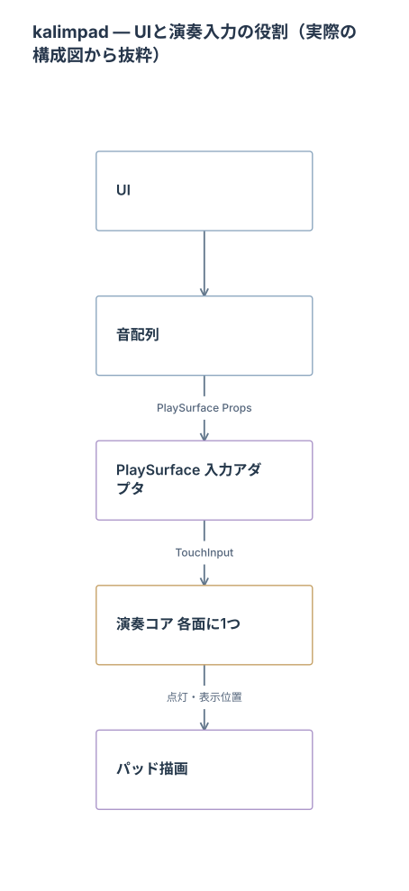

機能を足すとき、「どんな画面にするか」と一緒に考えているのが、どの処理を、どこに置くかです。
kalimpadの開発では、ArchMapでシステム構成を把握しながら機能を実装しています。開発者が手応えを感じているのは、UIと内部処理の役割を分けて考えられること。演奏の反応を大切にするアプリだからこそ、画面の都合だけで処理の置き場所を決めないようにしています。
画面から、演奏の中身へ。
下の図は、開発に使っている実際のArchMapからの抜粋です。元のノード名と矢印を保ち、今回の話に必要な5要素を縦に並べ直しました。


図を大きく見る ↗ · この抜粋のMermaidを保存
3つの役割で読む。
UI・音配列
画面での操作と、音の配置を扱う部分。TypeScript側で計算したレイアウトを、Propsとして演奏面へ渡します。
入力アダプタ
端末で受けたタッチを、内部の演奏コアへ渡す部分。画面の表示設定と、指が触れた瞬間の入力を分けて読みます。
演奏コア・パッド描画
共有C++の演奏コアが入力を判断し、点灯などを描画側へ伝えます。役割を分けると、追加機能でどの境界を越えるのかを確認しやすくなります。
AIへ頼む前の、3つの問い。
構成図を眺めるだけで終わらせず、次のような確認に使えます。
- 画面に見せる情報と、内部で判断することは分かれているか。
- 指が触れてから反応するまでに、どの層を通るか。
- 変更する役割と、維持する受け渡しを説明できるか。
依頼文の例
この構成図をもとに、追加機能の表示・入力・内部処理の担当を整理してください。変更が必要な境界と、維持する受け渡しを示し、テストする条件を挙げてから実装に進んでください。
この依頼文は、今回の説明に合わせてまとめた例です。実際の過去の指示をそのまま引用したものではありません。
図があることと、速いことは別。
役割分担はパフォーマンスを考える手がかりになります。ただし、構成図だけで性能改善を証明することはできません。実装・テスト・実機での確認までつなげることを大切にしています。
まず小さな機能ひとつで、「その処理はどこが担当するか」を図から説明してみる。AIとの実装相談にも使える、kalimpad開発の工夫のひとつです。